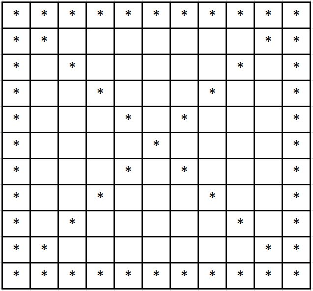

- Berilgan sonni juft yoki toq ekanligini anilovchi dastur
- a va n sonlari berilgan. a ning n-darajasini hisoblash dasturi
- 1*2*3*4*5 ko`rinishidagi masala dasturini tuzing
- 1 dan 100 natural sonlarning yig`indisini topish dasturini tuzing
- 0.5 dan 99.5 gacha yig`indini topish dasturi
- Dasturchilar kuni yilning 255-kunida nishonlanadi(bunda 1 - yanvar nolinchi kun deb hisoblanadi). Berilgan yildagi dasturchilar kuni sanasini aniqlaydigan dastur yozishingiz kerak. Grigorian taqvimida kabisa yili hisoblanadi. (yil raqami 400 ga bo'linadigan yil, yil raqami 4 ga bo'linadigan, ammo, 100 ga bo'linmaydigan yil)
- O`z raqamlari yig`indisining kvadratiga qoldiqsiz bo`linadigan sonlar g`aroyib sonlar deyiladi. Masalan: 162 soni (1+6+2)^2 ga qoldiqsiz bo`linadi.
- Berilgan rasmni ixtiyoriy parametrlar uchun yechimi topilsin 
- Foydalanuvchi yoshini aniqlash
- Arifmetik amallar bajarish
- Berilgan sonni tub son yoki murakkab son ekanligini aniqlash
- Berilgan a va b sonlarining EKUB ini aniqlash
- 1 sigir 1 yilda 1 ta tugʻadi. Uning bolasi 1 yildan keyin 1 tugʻadi. Tugʻilishda faqat sigir tugʻilsa, 100 yilda 1 ta sigir jami nechta sigirga koʻpayadi?
- 10 lik sanoq sistemasida berilgan sonni n-sanoq sistemasiga o`tkazish (1 < n < 17)
- Foydalanuvchi obyektini yaratish va to`ldirish
- Online do`kondan harid qilingan maxsulotlar va yetkazib berish xizmatini hisoblash
- Ingliz tilidan lug`at boyligingizni sinab ko`ring
- Berilgan matndagi unli sonlarni sonini aniqlash va ularni matn ichidan o`chirib tashlash
- Takrorlash operatori orqali prompt oynasida "add, str" buyrug`i bilan bo`sh jadvalga str matni kiritilsin
- Berilgan matnda unli harflar mavjudligini anqlash
- Vergullar bilan ajratib berilgan qatorni jadvalga aylantirib, 1- va oxirgi elementini olib tashlash. Agar elementlar soni 0 ta yoki 2 ta bo`lsa natijaga "null" qaytarishi lozim.
- Matndagi keraksiz belgilarni olib tashlash
- Berilgan massivdagi eng katta 2 ta sonni topish
- Massivdagi 0 dan farqli elementlar sonini aniqlash
- Massivda absolyut qiymati 7 dan katta bo`lgan elementlar sonini aniqlash
- Massivda 7 sonini uchrashi yoki uchramasligiga qarab "ha" yoki "yo`q" javobini beruvchi algoritm tuzing
- Massivdagi eng katta sondan massivdagi eng kichkina sonning ayirmasini toping
- A va B massivdagi elementlarning a katta b, a teng b, a kichkina b xolatlarini tekshirib har birini sonini aniqlang